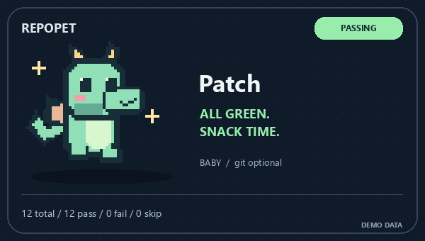
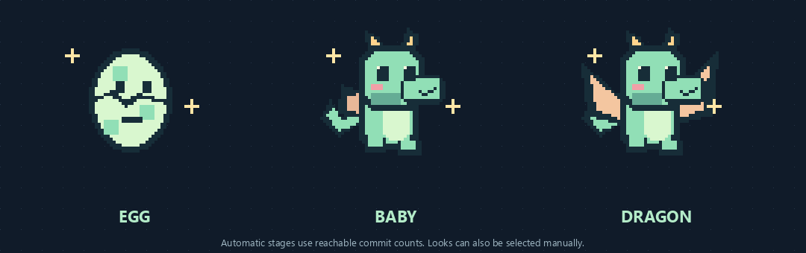

A little life for your README
Your repo
has feelings.
Meet Patch. Green checks make it dance. Broken builds? A very small tantrum.

Original pixel art · Local rendering · No model or API key

Interactive preview · Synthetic demo data · Pick a mood below
01 / Adopt
One command. One new friend.
Install the Skill, then tell your agent to give your repository a dragon. The bundled Python renderer makes the actual GIF.
npx skills add l422145205-source/showcase-skills --skill repo-petTry: “Use $repo-pet to give this repo a mint dragon named Patch. Use the existing JUnit report and add it to README.md.”
Renderer: Python 3.10+ and Pillow. Skill installer: Node.js. Standalone commands are in the README.
02 / Grow
Small repo. Big dragon energy.
Egg → baby → dragon. Available local commit history unlocks the look. Pick mint, lilac or peach, or choose a stage manually.

Cosmetic stages only, not a contribution score. Shallow clones see partial history.
03 / Keep it simple
Cute on the outside. Honest underneath.
Real signals
JUnit or workflow JSON sets the mood. Missing reports stay unknown. No invented green checks.
No personal trail
Only aggregate counts and status. No author emails, commit messages, remote URLs or source paths in the exported snapshot.
Your README stays yours
Edits only its own marker block when asked. No automatic pushes or write-enabled workflows. Rerun to refresh the image.
Every repo deserves a little personality.
Want another expression or creature? Bring your ideas to GitHub.